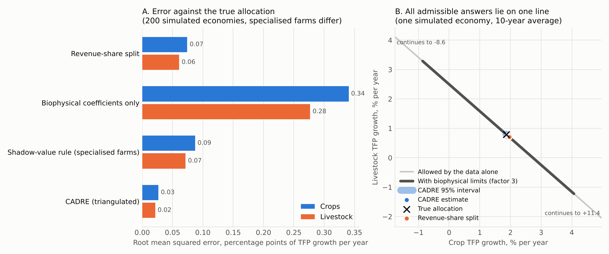

Working draft
Separating crop TFP from livestock TFP when inputs are shared
The CADRE protocol: Constrained Allocation and Domar Reconciliation
Preliminary working draft, 23 November 2026. Simulation evidence only; the method has not yet been applied to survey data. Comments are welcome. The views expressed are the author's own and do not represent those of any current or former employer.
Read the paper (PDF, 13 pages)Summary
Agricultural total factor productivity (TFP) is published for agriculture as a whole, almost never for crops and livestock separately. Farms do not report how much of their labour, machinery or capital went to the fields and how much to the animals, and on mixed farms the two activities feed each other through residues, manure and draught power.
The note proposes a protocol that produces crop and livestock TFP series with three properties.
- They add up. The two sector series reproduce the published aggregate through Domar weights, so existing aggregate series stay untouched.
- They do not claim more than the data support. Before any assumption, the protocol reports the full range of sector TFP growth that the data allow. That range is a line segment: once the aggregate is known, crop and livestock TFP can only move against each other along one line.
- The point estimate rests on three independent sources. Physical requirements, the behaviour of specialised farms, and a measured allocation on a small validation subsample. Their agreement can be tested.
In a simulated farm economy where the truth is known, the protocol recovers sector TFP growth with an error of about 0.03 percentage point a year, against 0.07 for the usual revenue-share split. Without any allocation assumption the same data allow crop TFP growth anywhere between −8.6% and +11.4% a year, and the note says so.

Replication files
- cadre_sim.py, the simulation (Python; needs numpy, scipy, pandas)
- cadre_fig.py, the figure (needs matplotlib)
- Result tables: T1 method comparison, T2 accounting checks, T3 illustrative economy, T4 calibration coefficients
Run python3 cadre_sim.py 200, then python3 cadre_fig.py. Seeds are fixed; the full run takes about ten minutes.